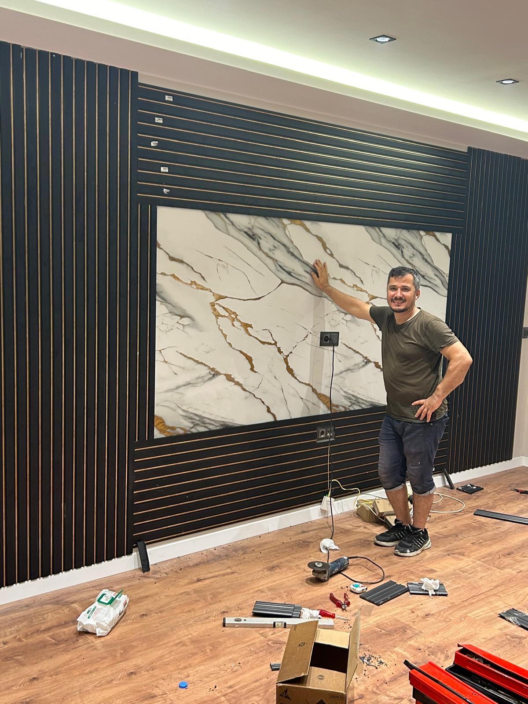
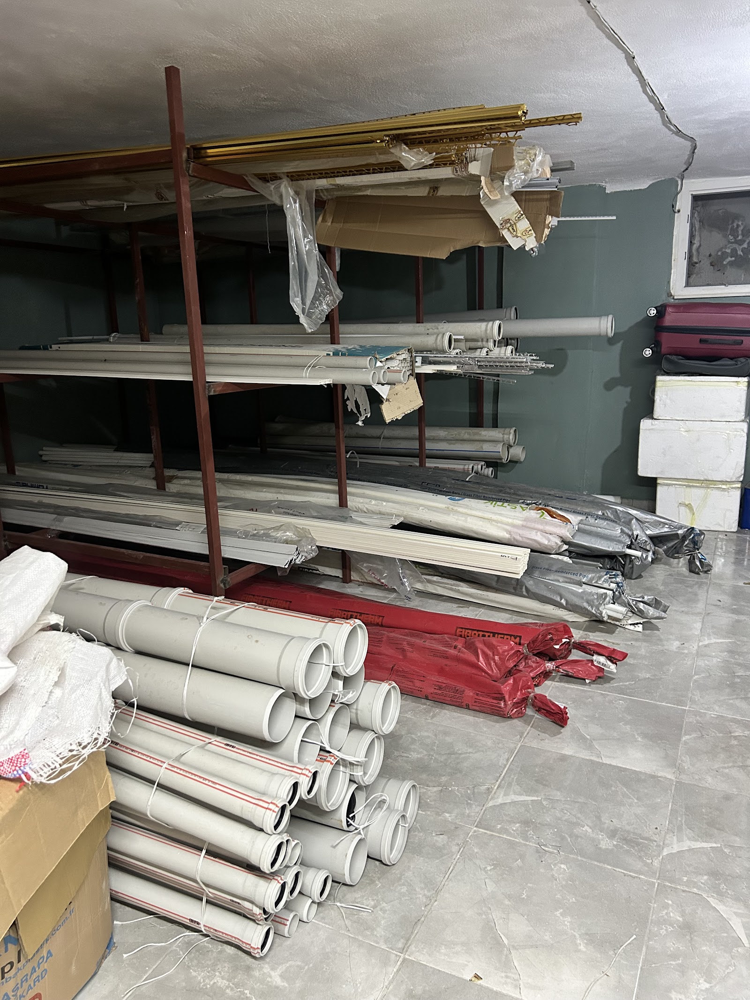
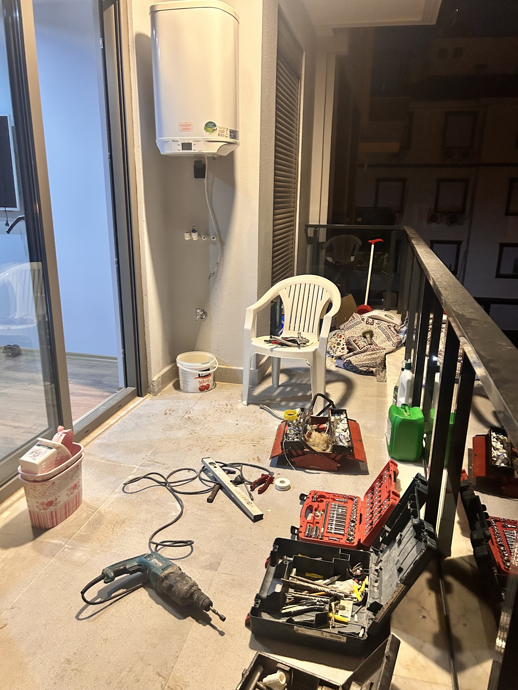
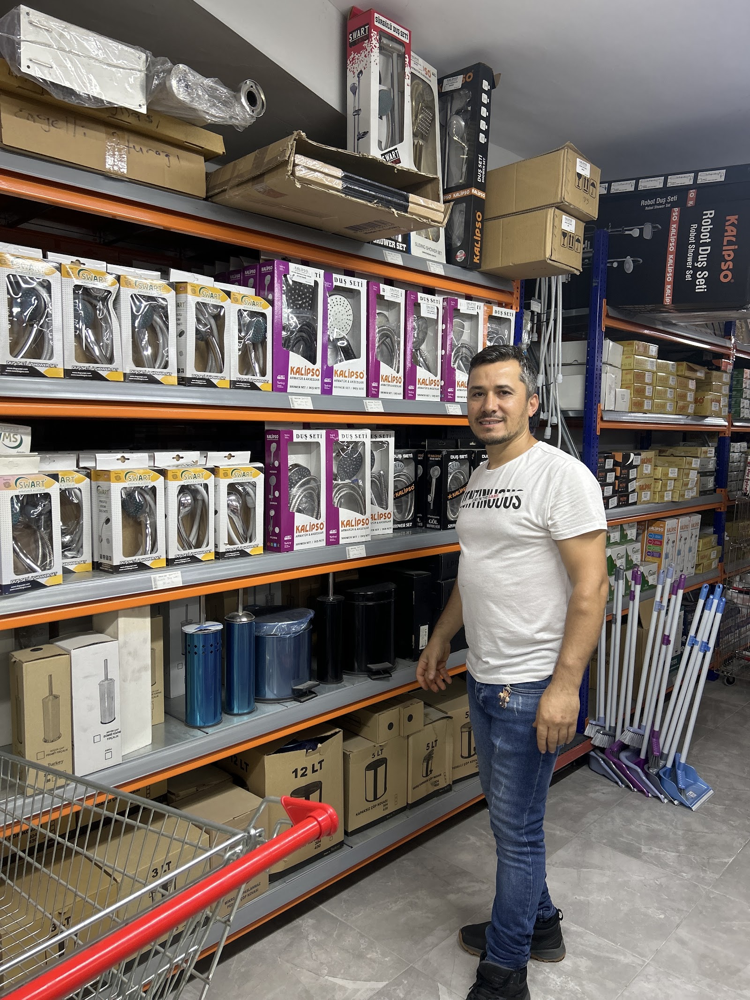

ARIZA ÇÖZÜCÜ
Kombiniz mi çalışmıyor? Önce bunu deneyin
Belirtiyi seçin: evde güvenle yapabileceğiniz adımları, ne zaman usta çağırmanız gerektiğini ve olası nedeni görün. Çözülmezse aynı ekrandan usta çağırın.
Belirtiyi seçin: evde güvenle yapabileceğiniz adımları, ne zaman usta çağırmanız gerektiğini ve olası nedeni görün. Çözülmezse aynı ekrandan usta çağırın.
Son bakım tarihini ve aylık doğalgaz faturanızı girin; bakım zamanı ve tahmini fazla harcama çıksın. Hatırlatma takviminize düşsün.
Verim kaybı oranı varsayımdır; kendi değerinizi yazabilirsiniz. Kesin durum bakımda ölçülür.
Gün ve saat aralığı seçin. Usta yola çıkınca bildirim gelir; aşağıda örneğini deneyin.
İlçe ve saat seçin; usta ziyaret saatini WhatsApp'tan teyit eder.
Bugünkü örnek servis kaydı
Bozulan şofbeni onarır ya da yenisini güvenli şekilde monte ederiz.
Termosifonun tesisat bağlantılarını doğru ve düzgün şekilde yaparız.
Kombideki arızaları kontrol eder, gerekli bakım ve onarım işlemlerini yaparız.
Su kaçağı, hatalı bağlantı ve tıkanıklık gibi tesisat sorunlarını gideririz.
Sifon sorunlarını yerinde çözer, gider hattındaki aksaklıkları gideririz.
Eski ya da hatalı tesisatı kontrol eder, ihtiyaca göre düzenleriz.




Müşterilerimiz, başka yerde uzayan işlerin Ramazan Usta ile dakikalar içinde hallolduğunu anlatıyor.
Şofben ve termosifon montajlarında işçiliğin temiz olduğunu yorumlarında sık sık belirtiyorlar.
Bina ve tesisat kaynaklı tekrarlayan sorunlarda aradığınızda gelip düzeltmeye devam ediyoruz.
Öğrencisinden ev sahibine herkesle sade ve saygılı bir şekilde ilgileniyoruz.
📍 Ahatlı,tesisat yeni emek, Ahatlı, 07060 Kepez/Antalya
🕑 Pzt–Sal 24 saat · Çar 08:00–00:00 · Per 09:00–00:00 · Cum–Paz 24 saat